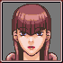
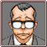

The First Turnabout
Capcom U.S.A., Inc.
Original Release October 12, 2001
Release April 9, 2019
Blood
Suggestive Themes
Use of Tobacco
Violence
A model is murdered in her apartment, and the suspect is none other than Phoenix's best friend Larry Butz! Can Phoenix save his pal and clear his name!?
Full Guide and Platinum Trophy Walkthrough for the First Turnabout Episode of the Phoenix Wright: Ace Attorney Trilogy Video Game. This guide can also help with previous versions of the game.
Playing the game in this order is merely just suggested; I do not force you to play in this order, but it is highly recommended.
This guide is compiled into chapters in accordance with pivotal moments in the storyline of The First Turnabout Episode of Phoenix Wright: Ace Attorney.
 Spoiler Warning: Plot details, ending details, or both are in the text and images which follows
Spoiler Warning: Plot details, ending details, or both are in the text and images which follows
Time of Crime July 31st, 4:00 PM
Location Cindy's Apartment
Defendant Larry Butz
Victim Cindy Stone
Cause of Death Blood loss due to blunt force trauma to the back of her head
Murder Weapon A statue of "The Thinker"

Defense Attorney Phoenix Wright
Prosecution Lawyer Winston Payne
First Steps 
August 3, 9:47 AM
District court
Defendant Lobby No. 2
Read dialogue
August 3, 10:00 AM
District court
Courtroom No. 2
Please Turn In Your Badge 
Choose Mia Fey, then Larry Butz
Choose Cindy Stone
Choose Hit with a blunt object
 Witness's Account
Witness's Account

Present Cindy's Autopsy Report on "I remember the time..."
The Time of Discovery

Present Blackout Record on "I guess the victim..."
Hearing the Time
Present Statue on "There was a table clock..."
Choose Yes
Choose Went into the apartment
Choose Try sounding the clock
Choose Yes
Present Cindy's Passport
Larry Butz is found 
August 3, 2:32 PM
District court
Defendant Lobby No. 2
Read dialogue
Present Statue
Read dialogue
The First Turnabout